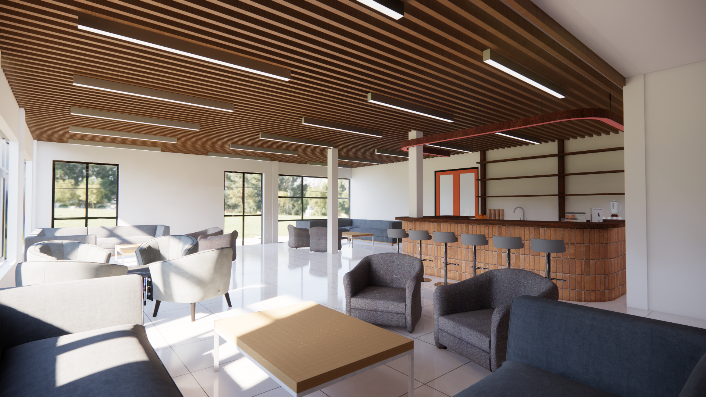
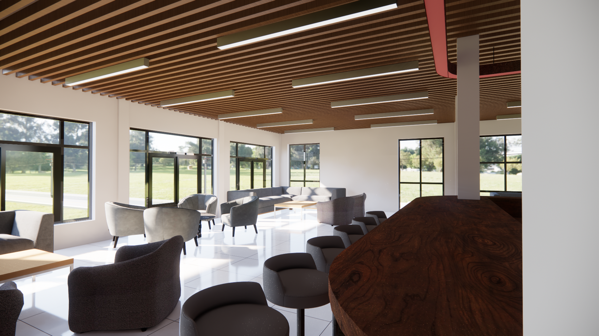
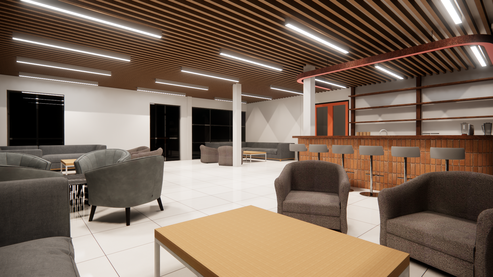
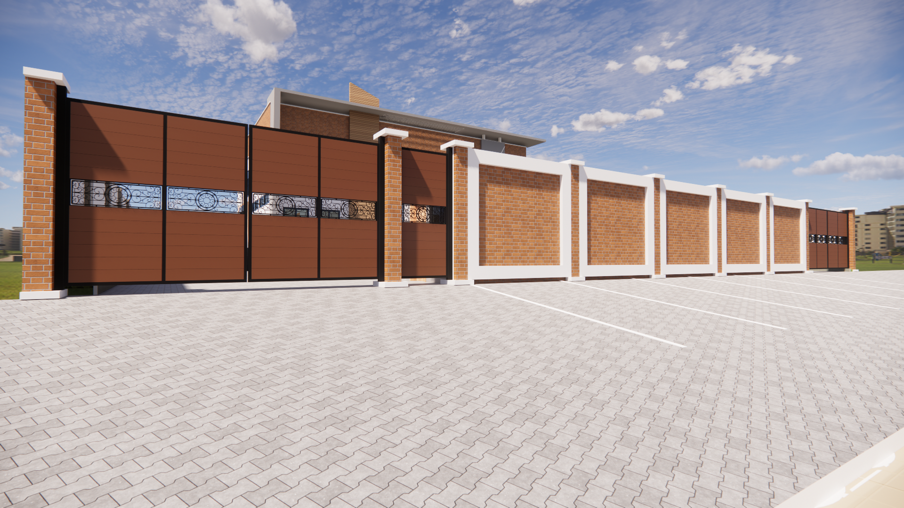

Optimisation des Flux et Stockage de Grande Capacité
Ce projet d'entrepôt logistique est une étude sur l'efficacité spatiale et structurelle dans le domaine industriel. Conçu pour répondre à des besoins de stockage intensif, le bâtiment utilise une structure métallique optimisée (IPE) permettant de grands franchissements et une hauteur libre maximale.
L'accent a été mis sur la fluidité des zones de déchargement, la sécurité incendie et la gestion de la lumière naturelle via des toitures techniques. Développé sous Revit avec un rendu temps réel Enscape, le projet intègre des simulations de rayonnages et de circulations d'engins, garantissant une exploitabilité parfaite dès la phase de conception.



